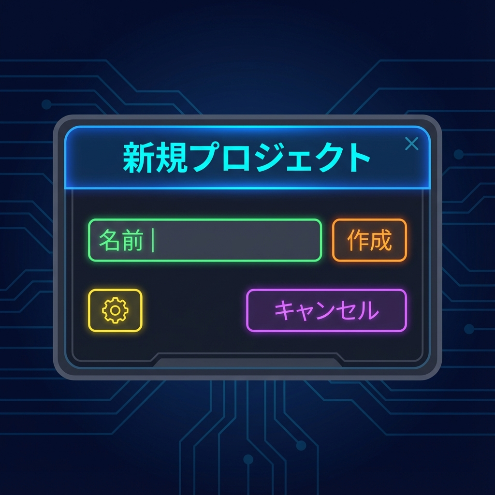
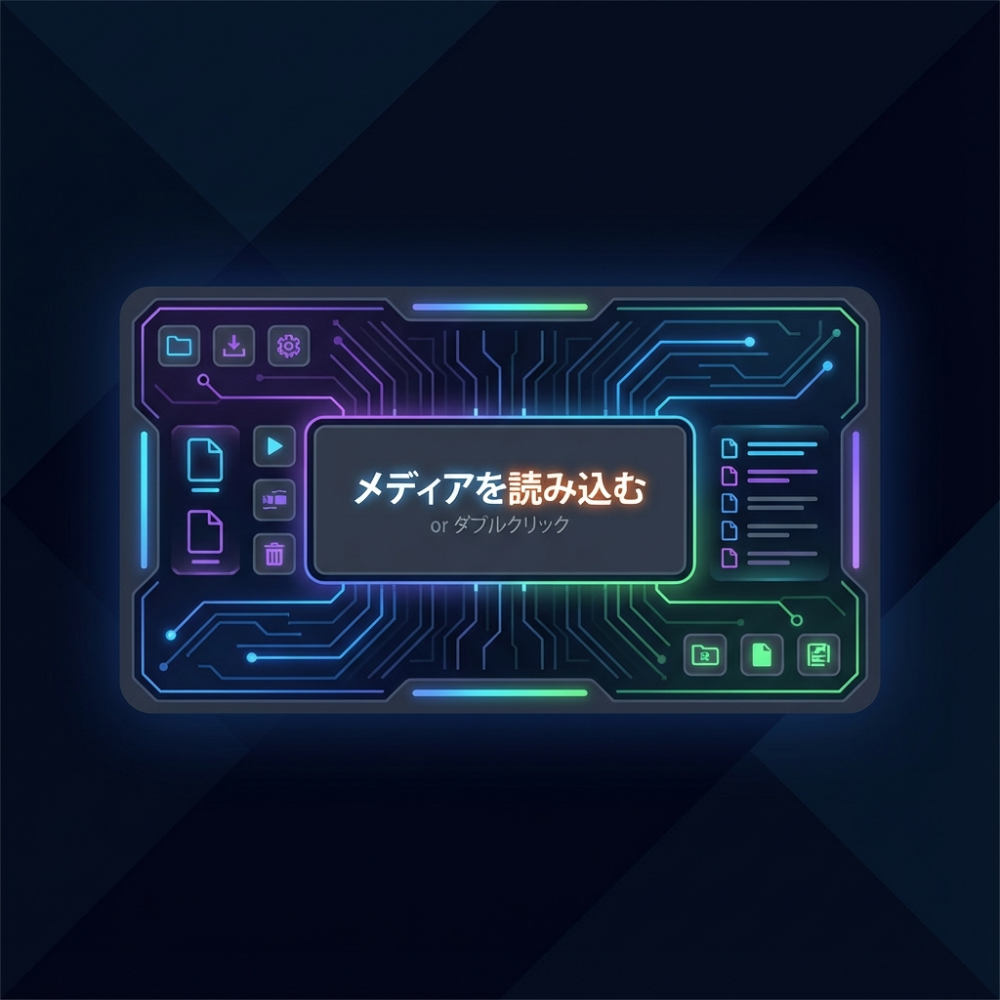
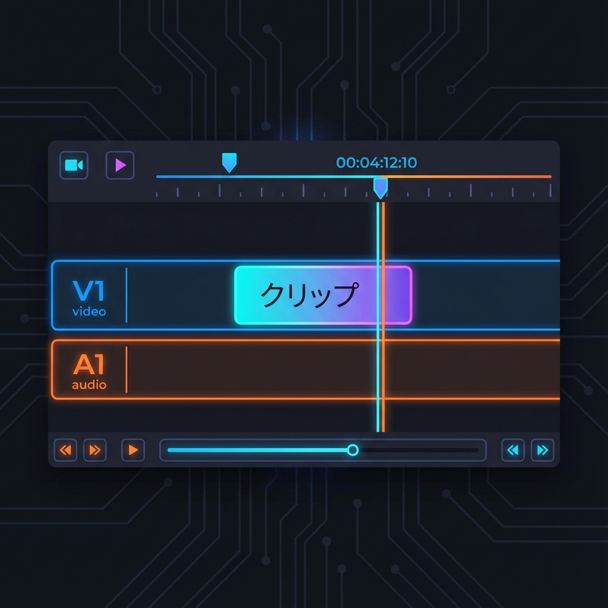

🎯 このミッションのゴール
動画編集ソフトの王道、Adobe Premiere Pro を起動して、編集を始める準備を整えます。 最初は難しそうに見える画面も、4つの主要エリアを理解すれば怖くありません！
🖥️ 画面構成（ワークスペース）を理解する
編集画面は大きく4つのパネルに分かれています。これさえ覚えればOK！

プロジェクトパネル
（左下）素材置き場。
- 動画・画像・音楽ファイルをここに読み込む
- フォルダ（ビン）を作って整理できる
- 料理で言うと「冷蔵庫」
タイムラインパネル
（右下）作業場・まな板。
- 素材を並べて編集するメインの場所
- 左から右へ時間が流れる
- 料理で言うと「調理台」
プログラムモニター
（右上）完成の確認。
- 編集中の映像がここに映る
- 視聴者が見る画面と同じ状態
- 料理で言うと「盛り付け確認」
ソースモニター
（左上）素材の味見。
- 元の素材を確認する場所
- 使いたい部分だけ選んでタイムラインへ
- 料理で言うと「味見」
🎮 実践タイム！
1プロジェクトを新規作成
まずは新しいプロジェクト（編集ファイル）を作ります。

- Premiere Proを起動
- 左上の「新規プロジェクト」をクリック
- プロジェクト名を入力（例：Day1_Practice）
- 保存先を選択（デスクトップなど分かりやすい場所にフォルダを作ろう）
- 右下の「作成」ボタンをクリック
2素材を読み込む（インポート）
編集に使う動画や画像を「冷蔵庫（プロジェクトパネル）」に入れます。

- 左下の「プロジェクトパネル」を探す
- 何もないところをダブルクリック（または Command + I）
- 用意された練習用素材（動画・画像・BGM）を選択して読み込む
- サムネイルが表示されたら成功！
3シーケンス（土台）を作る
調理台（タイムライン）を用意します。

- プロジェクトパネル内のメインとなる動画クリップを1つ選ぶ
- それを右側のタイムラインパネルへドラッグ＆ドロップ
- 自動的に設定が合ったシーケンスが作成されます
- 再生（スペースキー）して、プレビュー画面で動くか確認しよう！
📖 用語解説
プロジェクト
Premiere Proの保存ファイルのこと（.prproj）。素材の場所や編集情報を記録しています。
シーケンス
タイムライン上の編集データそのもの。1つのプロジェクト内に複数のシーケンスを作れます。
クリップ
読み込んだ素材や、タイムラインに配置した一つ一つの部品のこと。
ヘッド
再生ヘッド。タイムライン上の青い縦線のこと。現在表示している時間を指します。
🏁 Mission 1 クリア条件
✅ プロジェクトを作成し、素材の読み込みとシーケンス作成ができた！